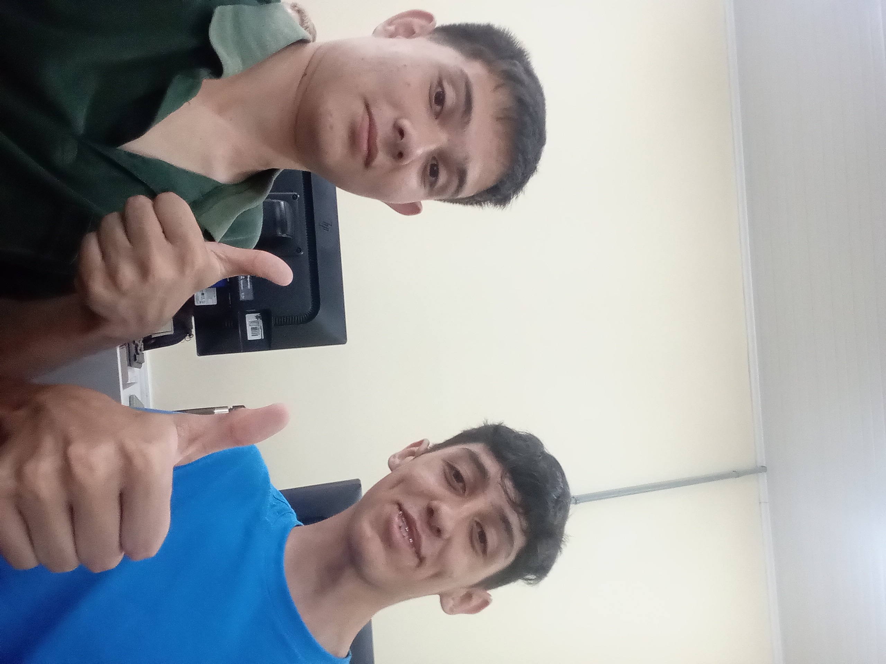

Internacional
Internacional Palmeiras
Palmeiras Manuel Noia - 1000 anos - Goleiro
Manuel Noia - 1000 anos - Goleiro Gremio
Gremio Santos
Santos Bahia
Bahia Ypiranga
Ypiranga Portuguesa
Portuguesa Cuiabá
Cuiabá São Paulo
São Paulo
|
| Artilheiros | Assistentes | Brasileirão |
| Melhores Goleiros | ||
| 2024 |
| Jogador | Clube | Jogos Sem Sofrer Gols |
|  SafadosFC | 38 | |
| Internacional |
38 | |
| Palmeiras |
20 | |
| Manuel Noia - 1000 anos - Goleiro |
Gremio |
18 |
| Santos |
15 | |
| Bahia |
12 | |
| Ypiranga |
10 | |
| Portuguesa |
8 | |
| Cuiabá |
5 | |
| São Paulo |
5 |